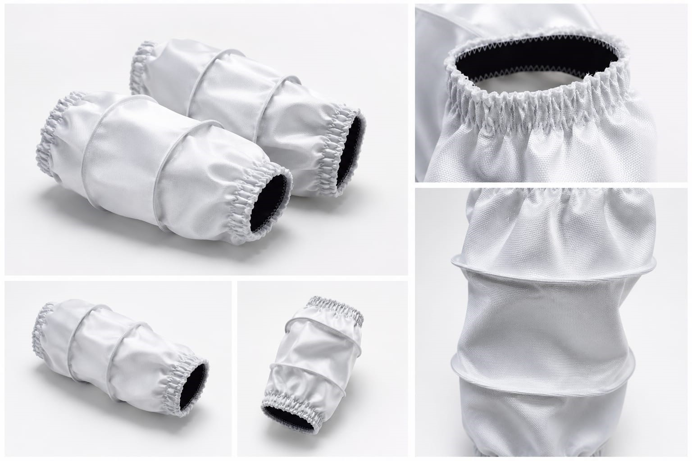

Qualidade que a indústria reconhece. Soluções têxteis industriais desenvolvidas para alta performance, resistência e durabilidade.
Solicitar Orçamento
A Coserfab atua no desenvolvimento e fabricação de mangas e soluções têxteis industriais, focando em qualidade técnica, durabilidade e desempenho para aplicações industriais exigentes.
Somos especializados em mangas industriais fabricadas com alto padrão de qualidade, resistência e acabamento técnico, atendendo indústrias que necessitam de desempenho, segurança e confiabilidade operacional.
Trabalhamos com foco em excelência industrial, melhoria contínua e atendimento próximo, buscando sempre oferecer soluções eficientes e personalizadas para cada necessidade.

Fabricadas com materiais resistentes para uso industrial, garantindo vedação eficiente, durabilidade e alto desempenho.
Soluções desenvolvidas com precisão técnica para aplicações industriais que exigem resistência, segurança e confiabilidade.
Desenvolvimento personalizado conforme necessidade técnica, aplicação industrial e especificações do cliente.
Desenvolver soluções têxteis industriais com qualidade, resistência e confiabilidade, contribuindo para a eficiência e segurança dos processos industriais dos nossos clientes.
Fabricar mangas e soluções industriais têxteis com alto padrão de qualidade, durabilidade e precisão técnica, oferecendo atendimento próximo, agilidade e confiança para indústrias que exigem desempenho e segurança operacional.
Ser referência na América Latina em soluções têxteis industriais, reconhecida pela excelência em fabricação, inovação, confiabilidade e compromisso com a qualidade.
Compromisso com acabamento, resistência e desempenho em cada peça produzida.
Atuar com responsabilidade, pontualidade e dedicação em cada entrega.
Construir relações sólidas e transparentes com clientes e parceiros.
Buscar constantemente melhorias técnicas, materiais e processos.
Produzir soluções que contribuam para ambientes industriais mais seguros.
Compromisso com processos industriais mais sustentáveis
Na Coserfab, acreditamos que desempenho industrial e responsabilidade ambiental devem caminhar juntos.
Por isso, trabalhamos no desenvolvimento de processos de logística reversa para mangas industriais com aros, promovendo o reaproveitamento de componentes e o descarte responsável de materiais.
Nosso objetivo é reduzir desperdícios, aumentar a vida útil operacional dos componentes e contribuir para processos industriais mais sustentáveis.
O processo ajuda a diminuir descarte industrial e consumo desnecessário de matéria-prima.
Solicite um orçamento personalizado
📞 Telefone: (42) 9904-2470
📧 E-mail: contato@coserfab.com.br
📍 Endereço: Ponta Grossa - PR